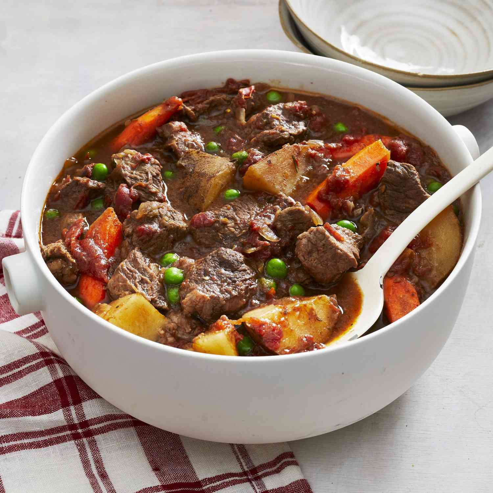

Christmas Eve Beef Stew

Description
A classic and traditional beef stew for Christmas Eve!
Perfect to serve with salad or warm bread.
Prep time: 10 mins
Additional time: 6 hours 10 mins
Servings: 8
Ingredients
- 2 & 1/2 pounds of beef, diced to 1" pieces
- 1 (28 ounce) can of stewed tomatoes (with juice)
- 1 cup chopped celery
- 4 carrots, sliced
- 3 potatoes, cubed
- 3 onions, chopped
- 3 & 1/2 tablespoons tapioca
- 2 cubes beef bouillon
- 1/8 teaspoon dried rosemary
- 1/8 teaspoon dried marjoram
- 1/4 cup red wine
- 10 ounce frozen green peas, thawed
Steps
- Preheat the oven to 120°C (250°F).
- Place beef, tomatoes, celery, carrots, potatoes,
onions, and tapioca into a Dutch oven.
Season with beef bouillon, thyme, rosemary, and marjoram;
stir in red wine. Place the lid on the Dutch oven.
- Bake for 5 to 6 hours in the preheated oven.
Add peas during last half hour of cooking.